只比较 MolmoAct2 原生和阶段一 best；计划共 192 次 rollout。模型评估完成：True。本页在审计后及评估结束后更新，中途实时进度见运行目录 report.json。
camera：世界坐标中偏航 ±20°、俯仰 ∓10°；lighting：环境灯光乘 0.55；combined：二者叠加。物理状态和任务语言保持一致，RGB、深度及相机标定由模拟器生成。
train 的任务及初态已用于我们训练；validation 参与 best 选择；test 的 4 个任务未参与我们训练或 best 选择。原生预训练可能见过所有 LIBERO 任务，因此不能称为对底座全新。每任务仅 2 个布局，是第一轮广度验证。
| 划分 | 场景条件 | 模型 | 任务成功 |
|---|---|---|---|
| train | normal | native | 8/8 |
| train | normal | best | 8/8 |
| train | camera | native | 5/8 |
| train | camera | best | 6/8 |
| train | lighting | native | 8/8 |
| train | lighting | best | 8/8 |
| train | combined | native | 7/8 |
| train | combined | best | 6/8 |
| validation | normal | native | 8/8 |
| validation | normal | best | 8/8 |
| validation | camera | native | 7/8 |
| validation | camera | best | 8/8 |
| validation | lighting | native | 7/8 |
| validation | lighting | best | 7/8 |
| validation | combined | native | 7/8 |
| validation | combined | best | 8/8 |
| test | normal | native | 7/8 |
| test | normal | best | 6/8 |
| test | camera | native | 6/8 |
| test | camera | best | 6/8 |
| test | lighting | native | 7/8 |
| test | lighting | best | 6/8 |
| test | combined | native | 7/8 |
| test | combined | best | 7/8 |
证据与状态 · 96 个场景的实际图像变化与有效深度 · 已有几何/历史结果及 demo
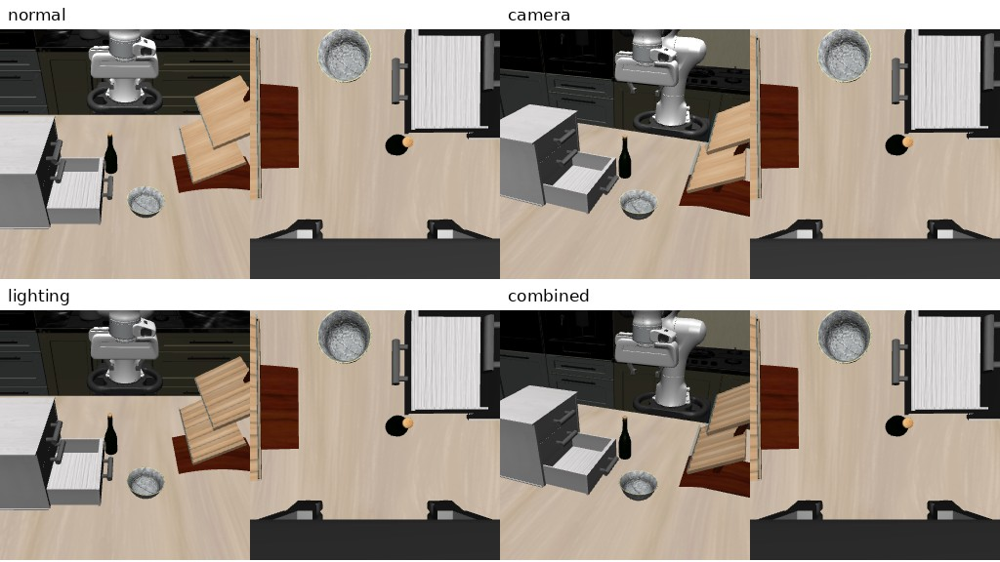
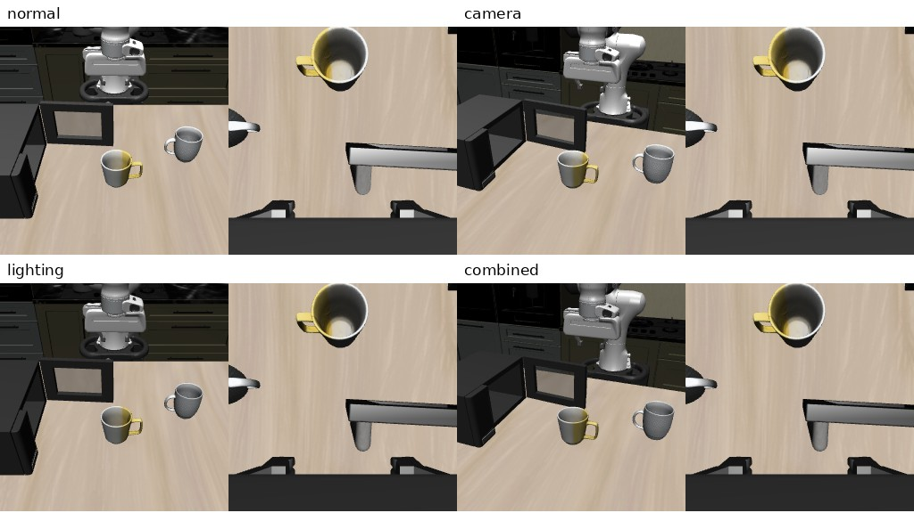
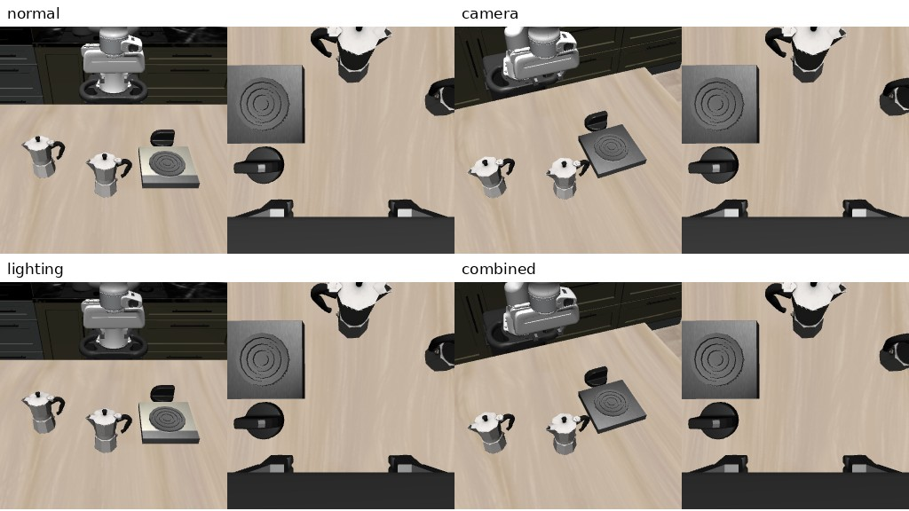
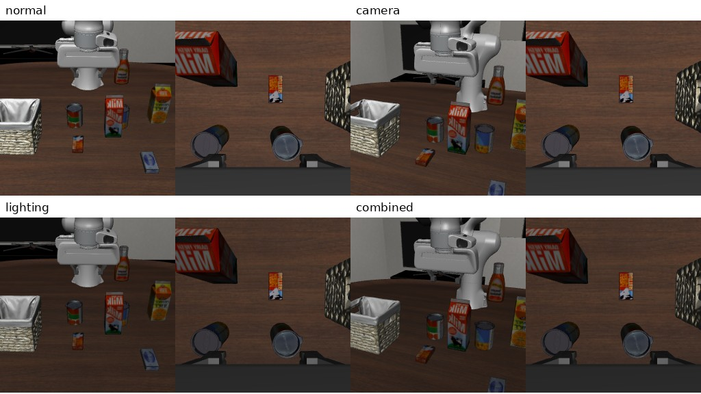
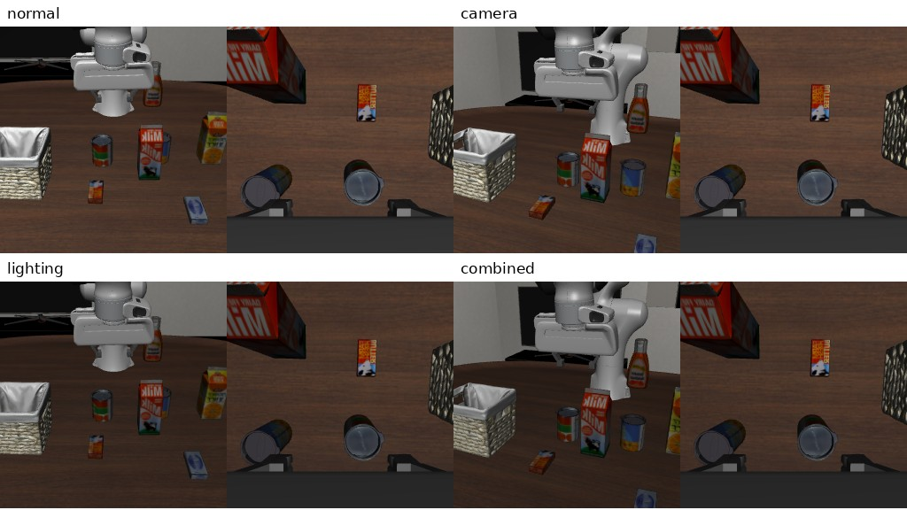
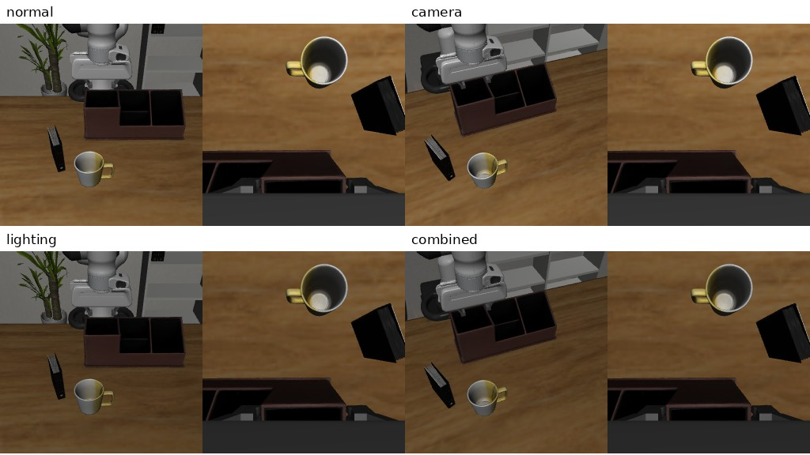
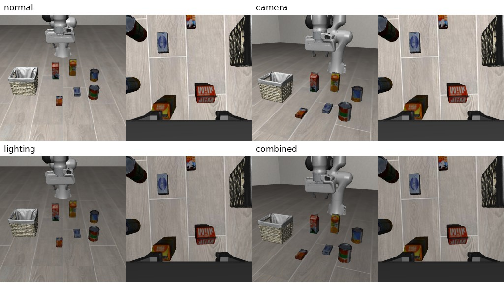
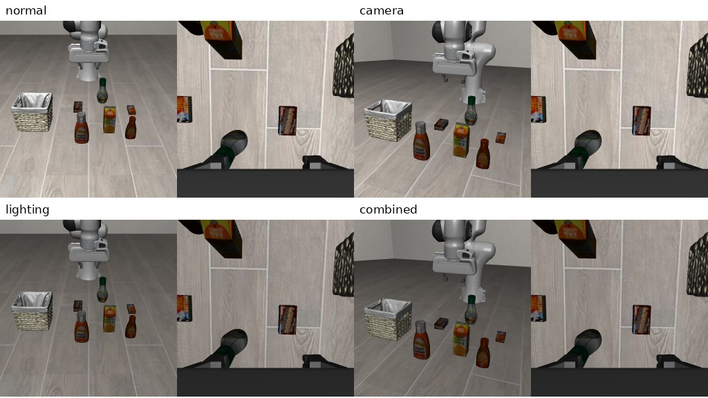
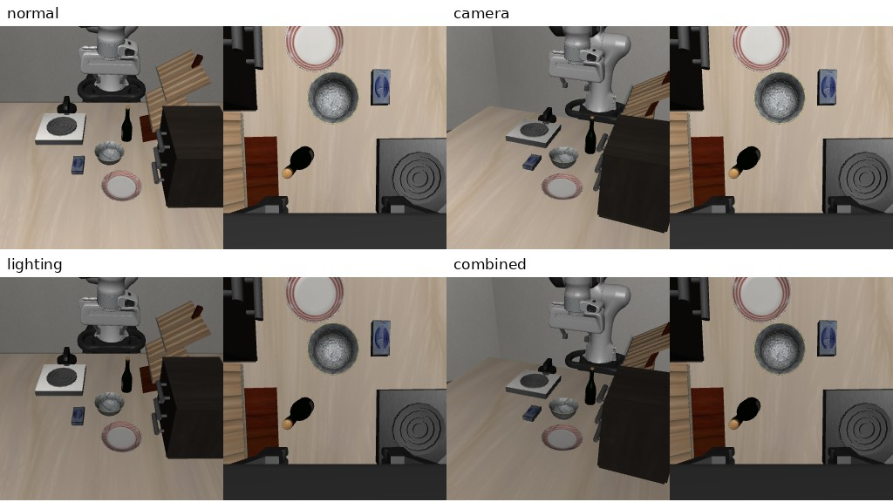
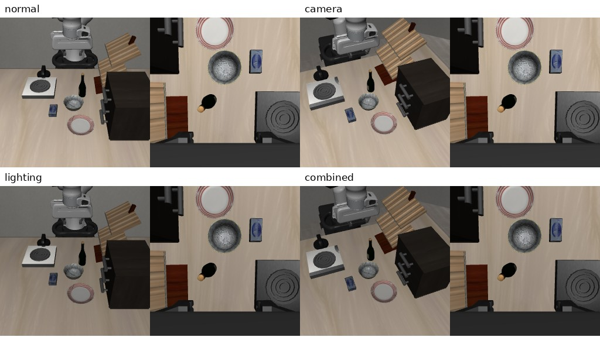
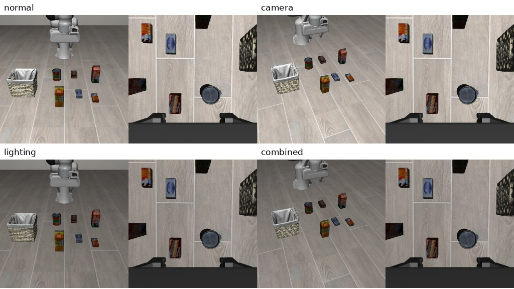
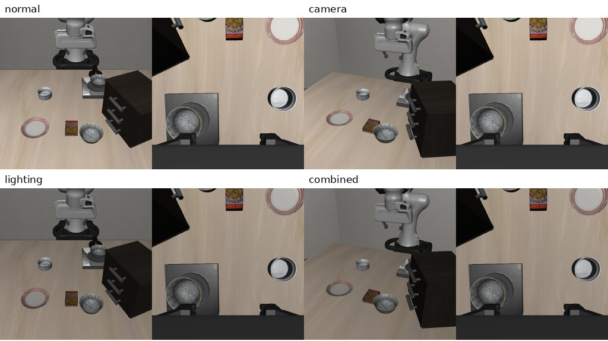
所有图片来自实际环境。这里扩展的是任务、已有物体和观察条件，不是新生成的物体类别。